Coordinating 330 mobile clinicians across 46 home states, 4 active studies, and 200 participants — with drive-time-aware optimization, license-aware staff matching, and one-click compliance audit. Outcomes: 31% increase in scheduling efficiency and 50% reduction in scheduling personnel.
How Work Calendar began, what we ran into, and what it became.
Work Calendar started as a question, not a system. Could a single tool coordinate three hundred mobile clinicians across forty-six home states, four active studies, and two hundred enrolled participants — without making the schedulers' lives harder? Existing tools were built for in-clinic scheduling, not decentralized trials. The shadow Excel where the team actually did the work was a clear signal that the existing system had failed.
The hardest part was learning what couldn't be compromised. License safety couldn't be a warning — it had to be a hard rule. Drive time couldn't be an afterthought — it had to be a first-class input on every match. Multi-role visits couldn't sit on the calendar as one block — they had to be slice-aware, role by role. Each of these started as an "if we have time" feature and became a non-negotiable.
We resolved the complexity by making the roster the foundation. Every booking, conflict check, and coverage decision joins back to a single roster table — role, home city, state licensures, study training. The matching engine reads from that table; the calendar, optimizer, audit, and request triage all read from the same source of truth. No duplicated state, no gaps where one part of the system trusted different facts than another.
The shipped product moves the work that used to take two schedulers per study down to one — with the engine doing the routing, matching, and conflict resolution. Thirty-one percent gain in efficiency, fifty percent reduction in scheduling personnel. The next move is to expand the engine to adjacent operational surfaces — timesheets, payroll, training records — that today live in separate tools but share the same roster.
The discovery research that named the problem, and the concept validation work that confirmed the design answered it. Two bound deliverables.
What schedulers, RNs, CRCs, and investigators actually do today — the shadow Excel, the license-safety gap, the slice-level data model, and the audit problem. The four findings that became the four product principles.
Open the PDF Concept validationRound-two interviews against the shipped concepts. Thesis confirmed, discovery gaps closed, two new gaps in the queue. The framework that decides what ships next vs. what waits.
Open the PDFWork Calendar — eleven shipped surfaces, one source of truth. The visual walk and the design rationale behind every decision.
Work Calendar is a vertical product. Every feature exists because a real human — scheduler, manager, clinician, sponsor — has a specific job and a specific frustration. The calendar canvas is the home base. Optimize Day shrinks a nurse's drive time with a 2-opt route optimizer. Smart Match books an RN, CRC, and investigator together with one click. Quick Book lets a scheduler book a visit without leaving the keyboard. Coverage Insights resolves time-off requests in batch. Audit records every change with an undo for bulk actions.
The full case study walks all eleven surfaces in narrative order — the calendar, the role timeline, optimize day, quick book, the new-appointment form, the request triage, smart-match panels, coverage insights, the roster, audit, and the appointment detail panel. Below: six of those surfaces summarized as cards, then the complete UI gallery, then the case-study PDF link.
Filter first, focus second. Search across the full network, drop chips for provider / study / state / role, and the calendar collapses to just the work that matters this morning.
An AFIB-301 screening is RN on-site 90 min, CRC dialing in for the middle 60, investigator for the final 30. The calendar shows each role's exact slice — not the whole appointment block.
Treats a nurse's day as a Travelling Salesman instance anchored at her home. Nearest-neighbor seed, 2-opt local search, before/after diff. One click to accept the shorter route.
Linear/Figma-style palette. Type a participant ID, study, and time. An appointment is created in seconds. Built because schedulers do dozens of bookings a day and slow point-and-click is a tax on throughput.
The matching engine filters by study trained, state licensure, and slot availability — then ranks by drive distance from home to the participant. The scheduler sees the top match and the reasons, books all three in one click.
Auto-classifies the queue: 65 have no coverage impact (one-click approve), 22 collide with confirmed visits but a nearby licensed RN can swap in (one-click reassign), 2 are blocking and require an explicit reschedule.
Click a thumbnail to open the full screenshot.
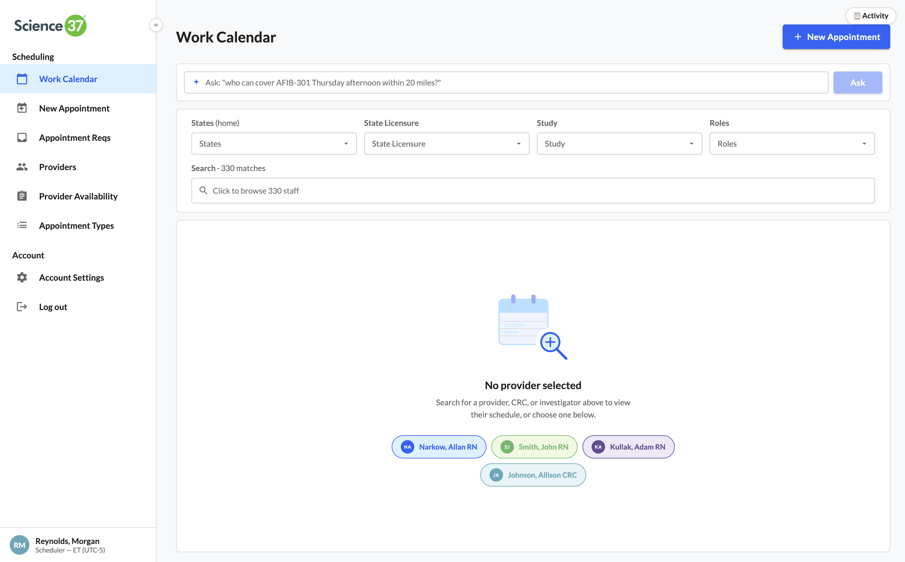
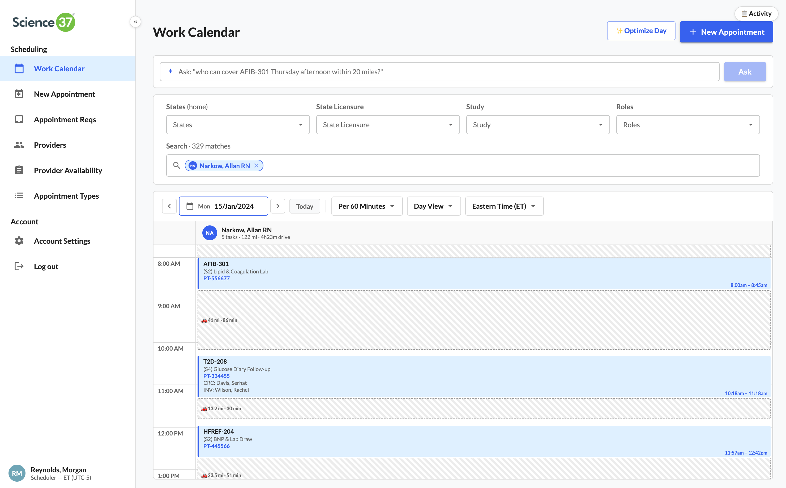
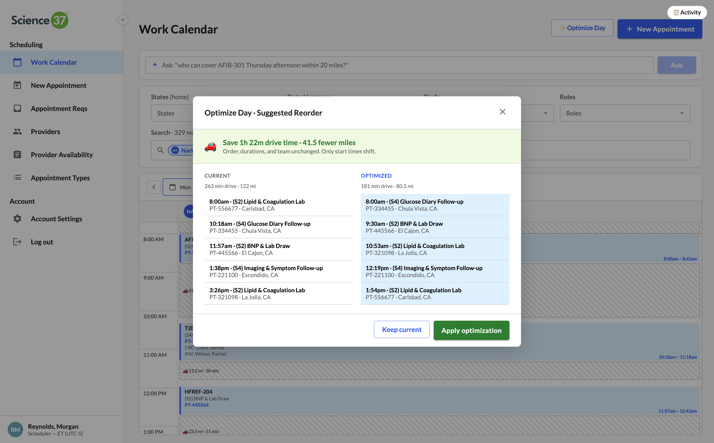
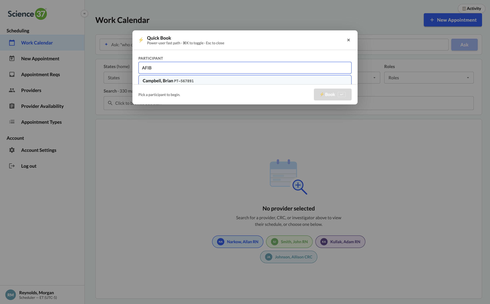
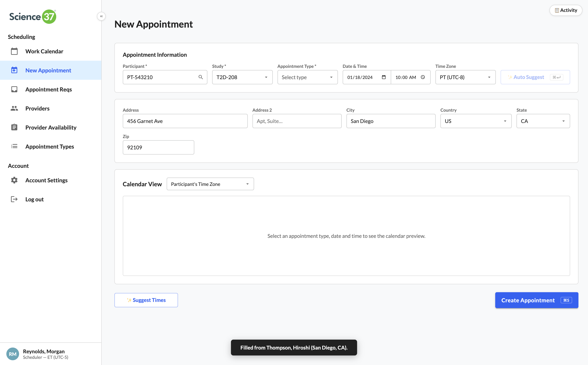
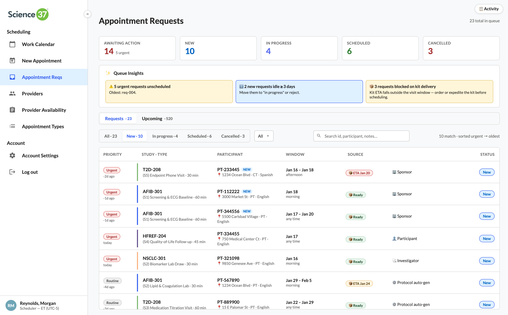
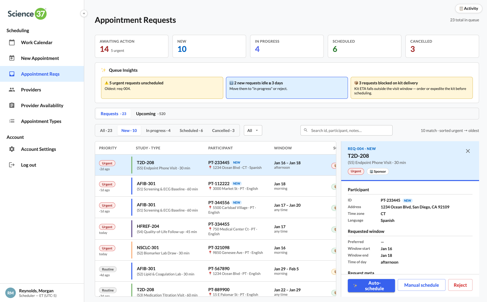
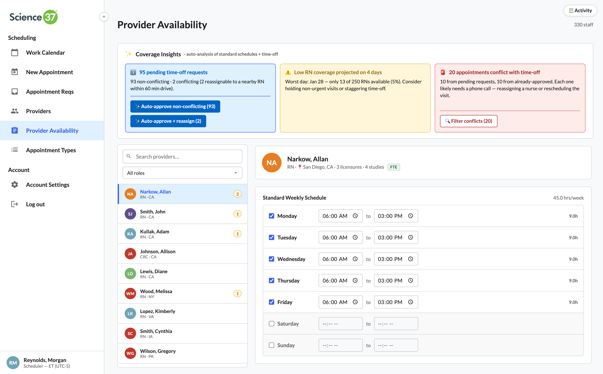
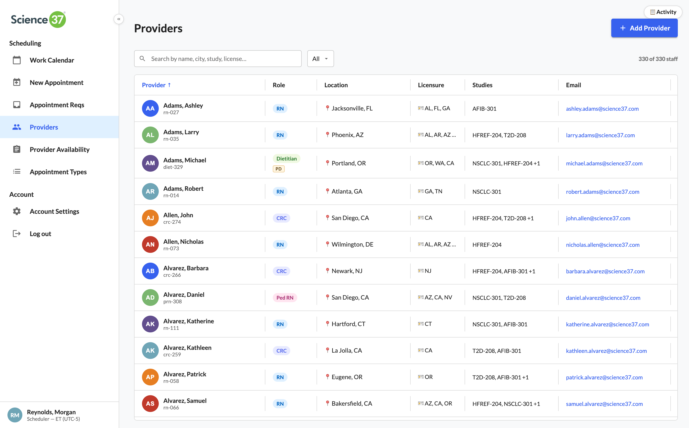
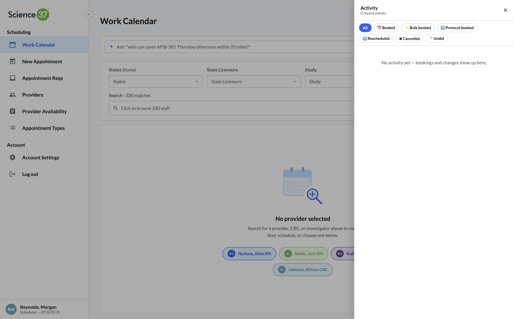
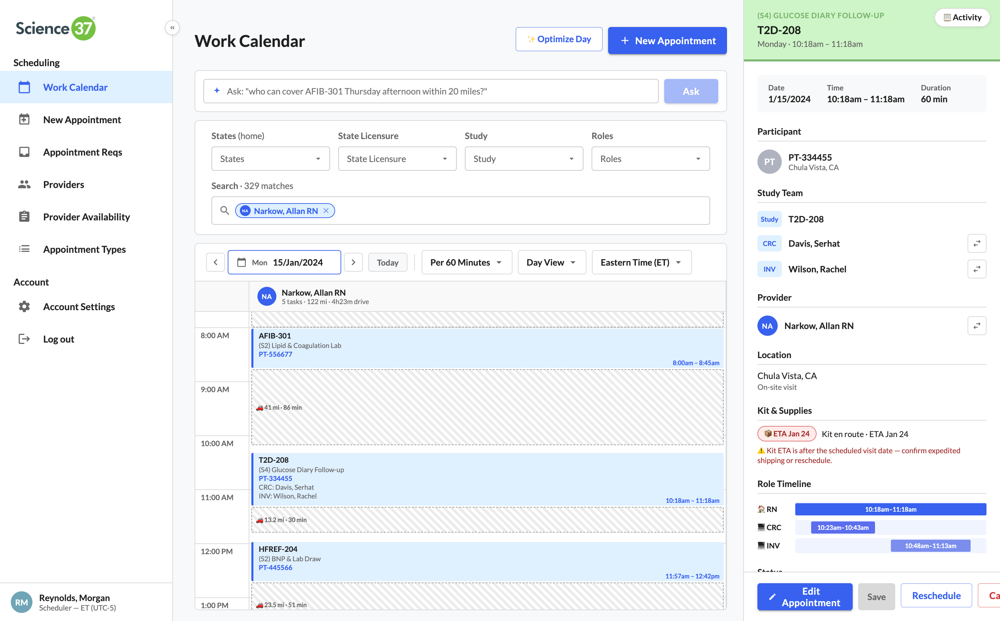
Why a single roster table sits underneath the calendar, the optimizer, the matcher, and the audit — and what changes when you make that the foundation.
Most scheduling systems treat the roster as a directory. A list of names you scroll. Work Calendar treats it as a query target — every booking, conflict check, and coverage decision joins back to it. The matching engine asks the roster: who is study-trained on AFIB-301, licensed in California, free at 2pm next Tuesday, and within 90 minutes of the participant's address? The roster answers in milliseconds because that's the shape of the data.
Four product principles fall out of this decision. Built for operations — every UI surface maps to a real role and a real frustration. Designed for trust — license safety is a hard rule, not a warning. Architected for scale — the roster is the only place state lives, so the system stays consistent as it grows. Audit as a query, not a feature — every action is recorded the same way, so a regulatory request becomes a filtered read instead of a forensic dig.
The architecture document below walks the system end-to-end — entity model, the matching engine as a query, the optimizer as a bounded service, the audit log as a read-side projection, and the integration surface for sponsor portals and patient self-service.
The metrics that justify the work — efficiency, headcount, scope of the system, and the operational model behind it.
Scheduling efficiency. Faster matching, fewer back-and-forths, drive-time-aware routing on every booking.
Scheduling personnel. The work that used to need two schedulers per study now needs one, with the engine doing the heavy lifting.
Modeled across the network: 150 FTE RN, 100 PD RN, 30 CRC, 20 INV, 15 Ped RN, 15 Diet — license-aware and study-trained.
Across 4 active studies (AFIB-301, HFREF-204, NSCLC-301, T2D-208), each with its own visit cadence and protocol.
Where the engine could go next — and why the roster-first architecture makes those moves cheap to build.
The roster is already shared by tools the calendar doesn't talk to yet. Timesheets read it for payroll. Training records read it for compliance. Onboarding reads it for credentialing. Each of those tools today maintains its own copy — drift, duplication, and the same staffing data answered differently in different places. Folding them onto the same roster is a data-model expansion, not a re-architecture.
[PLACEHOLDER — concrete next surfaces.] Fill in with the 2–3 specific surfaces you'd build next: e.g., timesheet auto-generation from the calendar, payroll export, training-record reminders driven by upcoming visits, sponsor self-service for visit requests, etc. Tighten this paragraph with whichever direction Science 37 (or you) saw as the most valuable next bet.